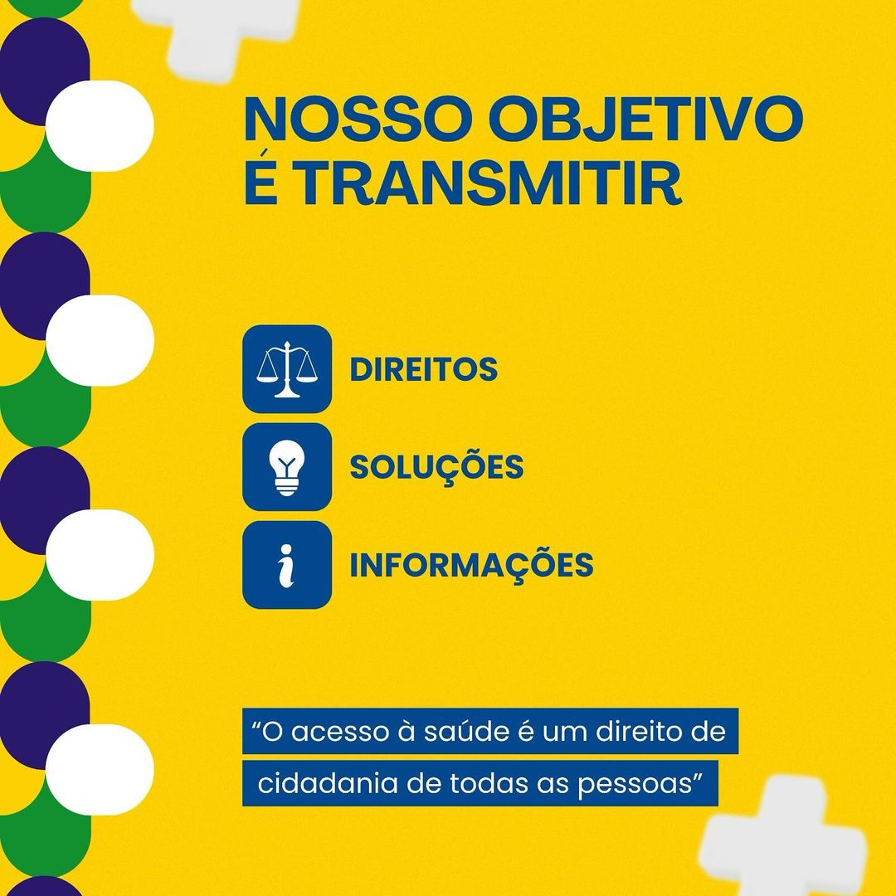
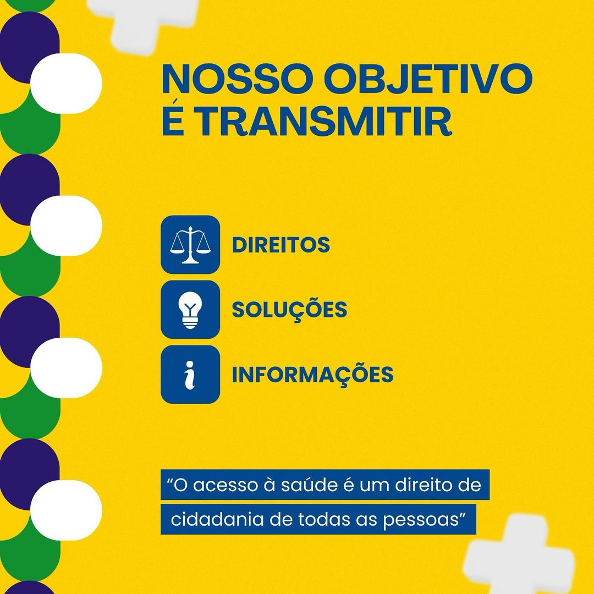

Somos um grupo de acadêmicos do Centro Universitário São Lucas, localizado no campus de Ji-Paraná, Rondônia. Por meio do Projeto de Extensão denominado Tech Cidadania,
estamos empenhados em fomentar a integração entre cidadania e inclusão digital. Nosso objetivo principal é viabilizar a implementação de ações que tragam melhorias
significativas no conhecimento e na compreensão do Sistema Único de Saúde (SUS).
Com essas ações, esperamos contribuir para a melhoria da qualidade de vida da população, fortalecendo o vínculo entre a comunidade e o sistema de saúde pública.
Através da educação e da inclusão digital, nosso projeto visa criar uma sociedade mais informada e consciente, capaz de usufruir plenamente dos benefícios proporcionados pelo SUS.
 

Clike aqui ou em cima da foto abaixo para acessar o nosso instagran e ficar por dentro de tudo sobre o SUS!